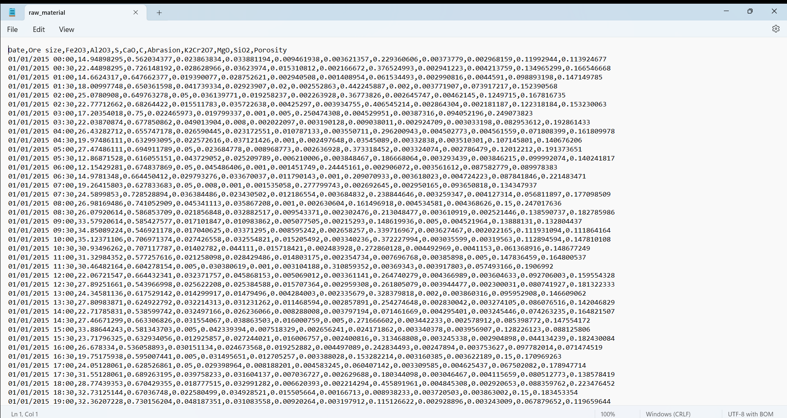
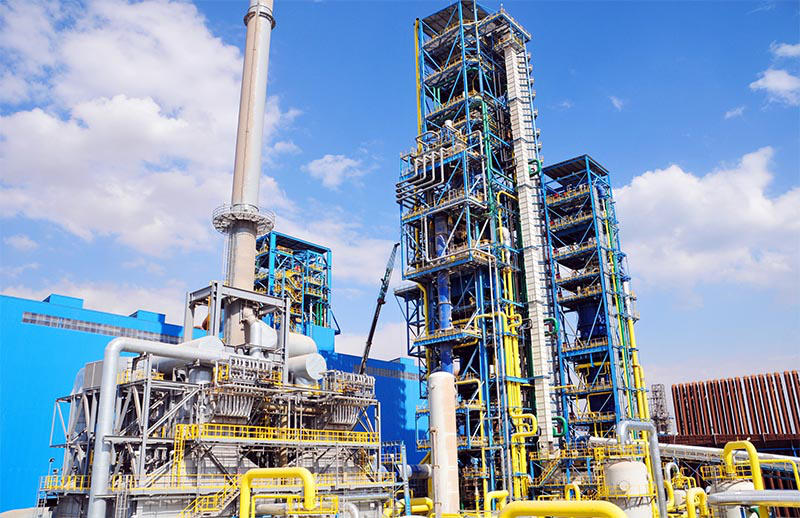
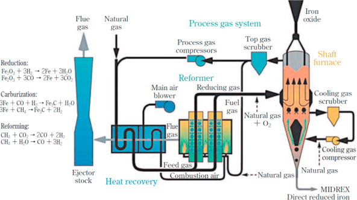
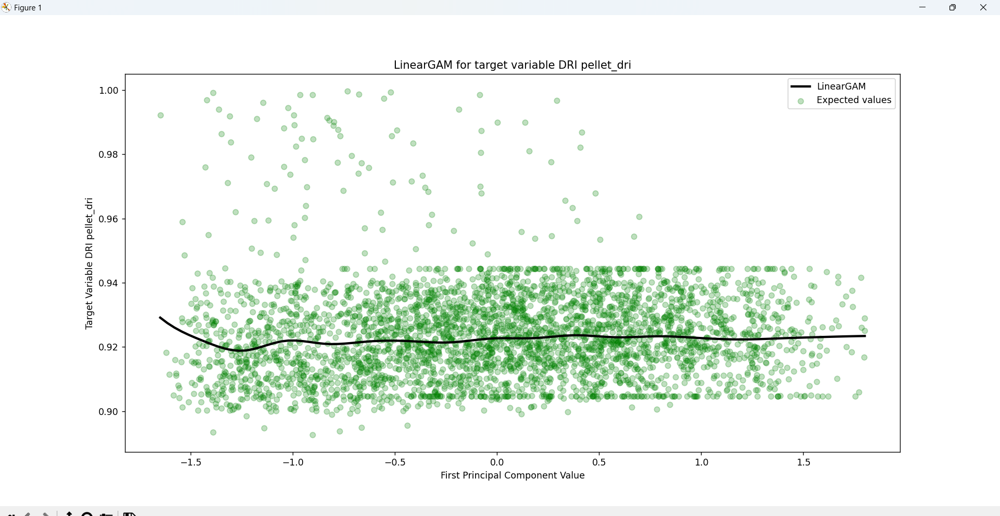
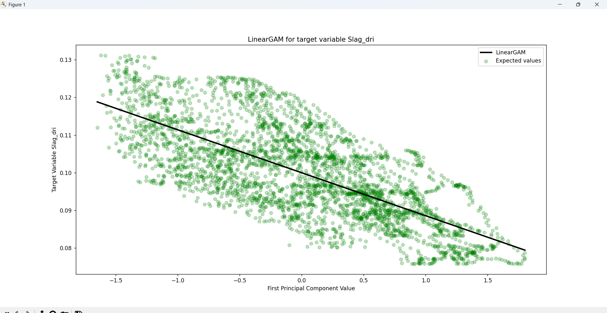

Qualitätskontrolle und Qualitätsvorhersage in einem Eisenschwamm-werk. Wie Interpretationen von Analysen und
Modellen verwendet werden können, um die Abfallproduktion zu kontrollieren und die Abfallerzeugung vorherzusagen.
NACHHALTIGKEIT hat sich schnell zu einer zentralen Priorität in der modernen Fertigung entwickelt,
angetrieben durch die wachsende Nachfrage nach umweltfreundlicheren Produkten und einer geringeren
Belastung der Umwelt. Dies ist auf ein neues Bedürfnis innerhalb der Fertigungsindustrie zurückzuführen,
umweltbewusster zu handeln und eine größere Verantwortung für die Auswirkungen der meisten
Fertigungsprozesse zu übernehmen.
In industriellen Produktionssystemen, insbesondere in energie- und ressourcenintensiven Sektoren, treten
Abfälle in verschiedenen Formen auf, wie z. B. Materialverluste oder Energieverschwendung. Dies macht es
für Unternehmen notwendig, digitale Lösungen zu entwickeln, um Abfälle in Fertigungsprozessen besser zu
verstehen, indem sie die Einflussfaktoren identifizieren und quantifizieren, die zu Abfällen führen, die
Produktqualität verbessern und einen profitableren und nachhaltigeren Betrieb fördern.
Die Eisen- und Stahlindustrie steht trotz ihrer technologischen Fortschritte ständig vor diesen
Herausforderungen. Die Herstellung von Eisenschwamm (auch bekannt als direkt reduziertes Eisen, DRI) ist
bekannt für ihre Abfälle aufgrund der nichtlinearen und hochkomplexen thermochemischen Reaktionen, die in
einem riesigen Reaktor unter strengen Temperatur- und Druckbedingungen ablaufen. Daher ist die Überwachung
und Steuerung von Qualitätsabweichungen und Abfällen in Echtzeit eine große Herausforderung. (UND auch eine
wichtige Chance für Datenanalyse und Optimierungsmodellierung)
Dank der Integration fortschrittlicher Datenanalyse- und maschineller Lerntechniken in Fertigungssysteme
ist es nun möglich, Tausende von Sensoren und Messdaten zur Interpretation zu verarbeiten. Im Zusammenhang
mit der Schwamm-Eisen-Produktion ermöglichen diese Tools die Entwicklung von Vorhersagemodellen, die die
Qualität der Rohstoffe, Temperatur- und Drucksensordaten innerhalb des Direktreduktionsreaktors und die
Eigenschaften des Endprodukts miteinander verknüpfen.
Dies ermöglicht einen dynamischen Qualitätskontrollkreislauf, in dem Abweichungen antizipiert und
korrigiert werden können, bevor sie am Ende des Herstellungsprozesses zu Ausschuss führen.
Dieses Projekt untersucht, wie datengestützte Interpretationen komplexer Prozesse zwei Hauptziele
unterstützen können: Qualitätskontrolle und Qualitätsprognose. Diese Ziele werden anhand von
simulierten Prozessdaten angegangen, wie sie typischerweise in einer Eisenschwammfabrik vorkommen.
Im Rahmen dieses Projekts werden wir die CRISP-DM-Methodik anwenden, um Vorhersagemodelle zu
erstellen, mit denen sich die Abfallerzeugung prognostizieren lässt. Dazu werden Muster anhand von
Kontrollsensoren in einem Direktreduktionsreaktor und Informationen aus Materialproben identifiziert, die
vor und nach dem Prozess entnommen wurden. Ausgangspunkt ist das Verständnis der Geschäftsziele, Endpunkt
ist die Bewertung des Modells zusammen mit umsetzbaren Erkenntnissen aus den Daten.
Im Rahmen dieses Projekts werden wir das Konzept der Nachhaltigkeit in der Fertigung untersuchen und wie
Interpretationen von Analysen und Modellen zur Kontrolle der Abfallproduktion und zur Vorhersage der
Abfallerzeugung genutzt werden können. Dabei werden datengestützte Ansätze genutzt, mit denen Hersteller
die Ursachen für Abfall identifizieren, ihre Produktionsprozesse optimieren und ihren ökologischen
Fußabdruck verringern können.
Das übergeordnete Ziel dieses Projekts ist es, aufzuzeigen, wie Hersteller statistische Modelle und
maschinelles Lernen nutzen können, um Abfallquellen zu identifizieren, Qualitätsindikatoren zu überwachen
und die Ressourcennutzung zu verbessern.
HINWEIS: Alle Daten in diesem Projekt sind simuliert und spiegeln nicht die tatsächlichen Betriebs-
oder Stichprobendaten wider, die in einer real existierenden Schwamm-Eisen-Produktionsanlage zu finden
sind. Die am Ende des Projekts gezogenen Schlussfolgerungen stellen keine Ergebnisse dar, die auf eine
reale Schwamm-Eisen-Produktionsanlage anwendbar sind.
SCHRITTE 1: Verständnis der Industrie
I. Qualitätskontrolle:
Die Qualitätskontrolle ist ein wesentlicher Prozess in der Fertigung, der darauf abzielt, Fehler oder
Abweichungen vom idealen Produktionsprozess zu identifizieren und zu korrigieren. Dieses Projekt wurde
entwickelt, um Daten von verschiedenen Sensoren zur Qualitätskontrolle zu analysieren und Muster von
Qualitätsproblemen unter Berücksichtigung aller am Fertigungsprozess beteiligten Elemente zu
identifizieren.
Durch die genaue Bestimmung der Ursachen und des Zeitpunkts dieser Abweichungen können in Echtzeit
Maßnahmen ergriffen werden, um die Produktqualität zu stabilisieren und unnötige Material- und
Energieverschwendung zu reduzieren.
II. Qualitätsprognose:
Die Qualitätsprognose in Fertigungsprozessen nutzt Daten und statistische Modelle, um die Qualität des
Endprodukts auf der Grundlage der Eingabevariablen und Prozessparameter vorherzusagen. Das Ziel besteht
darin, potenzielle Qualitätsprobleme frühzeitig im Produktionsprozess zu erkennen, sodass der Hersteller
die Möglichkeit hat, die Produktion vor der Herstellung des Endprodukts zu korrigieren.
In einer Eisenschwammfabrik bedeutet dies, die Eigenschaften des Endprodukts (z. B. Porosität,
Metallisierung, Kohlenstoffgehalt) anhand von Variablen wie der Zusammensetzung des Einsatzmaterials, der
Reaktortemperatur und dem Druck vorherzusagen. Die Vorhersage der Produktqualität ermöglicht proaktive
Prozessanpassungen, mit denen Verschwendung verhindert werden kann, bevor sie entsteht.
Bei den Key Performance Indicators (KPI) berücksichtigen wir den Mehrwert für den
Herstellungsprozess, wenn dieser an die Abfallproduktion angepasst wird. Die KPI sollten zu einer Senkung
der Kosten, einer Steigerung der Gewinne und einer Verringerung der Umweltbelastung beitragen. (Da Abfall
in der Regel auf ineffiziente Prozesse, minderwertige Produkte oder eine Kombination aus beidem
zurückzuführen ist.)
SCHRITTE 2: Data Understanding
Das Verständnis der Daten umfasst alle Aktivitäten im Zusammenhang mit der Untersuchung der Struktur, des
Inhalts und der Qualität der Datensätze, die für das Problem relevant sind. Bei diesem Fertigungsprojekt
liegt der Schwerpunkt in erster Linie auf der Bewertung der Verwendbarkeit der Sensormesswerte,
Materialproben und Produktionsdaten, die in verschiedenen Phasen des DRI-Prozesses für Eisenschwamm
gleichzeitig erfasst werden.
Bevor das Projekt fortgesetzt wird, ist es wichtig, den zugrunde liegenden Prozess kurz vorzustellen.
Eisenschwamm ist ein metallisches Produkt, das durch die direkte Reduktion von Eisenerz in einem
Direktreduktionsreaktor unter relativ kontrollierten Bedingungen hergestellt wird. Im Gegensatz zu
Hochöfen, die Koks (eine Art fester Brennstoff) als Reduktionsmittel bei niedrigeren Temperaturen
verwenden. Der Reduktionsprozess umfasst die Verwendung von Gasen wie Wasserstoff (H2).
Im DR-Reaktor durchläuft das Eisenerz mehrere chemische und thermodynamische Prozesse wie „Redox” -
Reaktionen, „Gas-Feststoff”-Reaktionen mit Reduktionsmitteln und Wärmeübertragung. Diese Arten von
Prozessen umfassen nicht nur relevante Variablen wie Temperatur, Druck und das Vorhandensein chemischer
Verbindungen, sondern auch physikalische Eigenschaften, die im Eisenerz und im Endprodukt vorhanden sind.
Bevor wir Datenmodelle für die Qualitätskontrolle oder Qualitätsvorhersage anwenden können, müssen wir
zunächst den Umfang und die Bandbreite der Daten verstehen. In diesem Fall berücksichtigt das Projekt das
Produktionsvolumen, Rohstoffdaten, Sensoren im Reaktor und Qualitätskontrollaufzeichnungen.
HINWEIS: Im Rahmen dieses Projekts werden wir keine Datenqualitätsprobleme wie Anomalien oder
fehlende Daten berücksichtigen, da alle Daten speziell für dieses Projekt generiert werden.
Die folgenden Hauptdatensätze sind in diesem Projekt enthalten:
1. Rohstoffprobendaten: Diese Variablen geben die physikalischen und chemischen Eigenschaften,
Abmessungen und Zusammensetzung von Eisenerz vor dessen Einbringung in den Direktreduktionsreaktor wieder.
Daher ist es unerlässlich, diese Eingangsvariablen zu verstehen, da sie die Qualität der Reduktion und die
Bildung von Verunreinigungen im Endprodukt beeinflussen. + Erzgröße (cm) + Eisenoxidereinheit %
(Fe2O3) + Verunreinigung 1 % (Al2O3) + Verunreinigung 2
% (S) + Verunreinigung 3 % (CaO) + Verunreinigung 4 % (C) + Abrasionsmaß (mm³) +
K2Cr2O7 Gehalt + MgO Gehalt + SiO2 Gehalt +
Porositätseinheit % (Φ)

2. Reaktorsensoren: Stellen die interne Umgebung des Direktreduktionsreaktors dar, die an
verschiedenen Stellen mithilfe von Thermoelementen und Manometern überwacht wird, um jeweils die Temperatur
und den Druck zu messen. Diese Sensoren liefern Erkenntnisse über die Stabilität und Konsistenz der
chemischen Reaktionen.
+ Temperaturmessung 1 (C°) + Druckmessung 1 (Pa) + Temperaturmessung 2 (C°)
+ Druckmessung 2 (Pa) + Temperaturmessung 3 (C°) + Druckmessung 3 (Pa)
+ Temperaturmessung 4 (C°) + Druckmessung 4 (Pa) + Temperaturmessung 5 (C°)
+ Druckmessung 5 (Pa)
Der Code nimmt eine erneute Stichprobenentnahme dieser Daten in 30-Minuten-Intervallen vor und berechnet
gleitende Durchschnitte, um die kleinen Schwankungen, die naturgemäß im Reaktor auftreten, zu glätten und
so reale industrielle Überwachungssysteme zu simulieren.

3. Mittelströme: Umfasst die Zugabe von Reagenzien, chemischen Bindenmitteln und Flussmitteln in den
Direktreduktionsreaktor, um die Eisenpellets chemisch in Eisenschwamm umzuwandeln. (Die Variablen sind in
Durchflussraten gemessen.) + Reagenz 1 H2 (L/min) + Reagenz 2 CO (L/min) + Reagenz 3
CH4 (L/min) + Chemisches Bindemittel 1 Al2O3 (kg/min) + Chemisches
Bindemittel 2 4SiO2(kg/min) + Chemisches Bindemittel 3 C6H10O
5 (kg/min) + Chemisches Bindemittel 4 C12H22O11 (kg/min)
+ Flussmittel 1 CaCO3 (L/min) + Flussmittel 2 CaMgCO3 + Flussmittel 3
SiO2
Agentenströme sind ein sehr wichtiges Element im Direktreduktionsprozess, da jede Art von chemischer
Komponente eine Funktion für den Gesamtzustand des Endprodukts hat.
Beispielsweise reagieren die Reagenzien, anders bekannt als Reduktionsgase, im
Direktreduktionsprozess mit dem Eisenoxid (FeO) und bilden dabei Eisenschwamm (Fe), während
Bindemittel Pulver sind, die hinzugefügt werden, um die Fasern zusammenzuhalten und eine kohäsive
Struktur der Eisenpellets zu schaffen. Schließlich dienen die Flussmittel dazu, die chemischen
Reaktionen zu fördern, die unter bestimmten Umgebungsbedingungen stattfinden.
Das Verständnis der Funktion dieser Verbindungen ist entscheidend, um ihr Fließverhalten mit den
Prozessergebnissen in Verbindung zu bringen. Beispielsweise können Schwankungen im H₂-Fluss die
Metallisierung beeinflussen, während Unregelmäßigkeiten in der Bindemittelzusammensetzung zu erhöhtem
Abrieb oder zur Entstehung von Abfallpulver führen können.
4. DRI Probendaten: dienen zur Analyse der Verteilung zwischen dem Endprodukt und den nach dem
Direktreduktionsprozess anfallenden Abfällen sowie der Qualität des DRI-Endprodukts, die anhand der Arten
von Verunreinigungen gemessen wird, die üblicherweise im Eisenerz vorkommen. + DRI-Pellet % +
Pelletgröße (cm) + DRI Reinheit % (Fe) + Verunreinigung 1 % (S) + Verunreinigung 2 % (C) +
Metallisierung % + Schlacke % + Abfallpulver % + Porositätseinheit % (Φ)

SCHRITTE 3: Aufbereitung der Daten
Nachdem nun alle Daten erfasst und vorverarbeitet wurden, können wir feststellen, dass jeder Datensatz aus
einem anderen Messpunkt innerhalb des Direktreduktionsprozesses stammt. Dies spiegelt die Funktionsweise
tatsächlicher langsamer industrieller Prozesse wider, bei denen Daten asynchron aus mehreren
Produktionsstufen generiert werden. Aus diesem Grund muss das Modell die Informationen anpassen, indem es
die Ausgabedaten mit den verschiedenen Eingabedatenquellen verknüpft.
Auf diese Weise kann das Modell die Umwandlung jeder einzelnen Pelletcharge Eisenerz während des gesamten
DRI-Produktionszyklus verfolgen, indem es die Datensätze an ihren jeweiligen Zeitpunkten aufeinander
abstimmt. In einem typischen DRI-Prozess dauert eine vollständige Umwandlung – vom Rohpellet-Einsatz bis
zum reduzierten Eisenausstoß – etwa 9 Stunden.
# Python CODE: Aggregation von Daten Im Code wird diese Logik direkt auf den Datenrahmen df_raw_material angewendet, indem 9 Stunden vom
Zeitstempel abgezogen werden. Dadurch werden die Rohstoffmerkmale mit der entsprechenden DRI-Ausgabe für
jede Charge abgeglichen.
Als Nächstes betrachten wir die Sensordaten, die aus dem Direktreduktionsreaktor (DR) gesammelt
wurden. Diese Variablen umfassen Druck- und Temperaturmessungen aus verschiedenen Reaktorzonen, die mit
hoher Frequenz (alle 2 Minuten) aufgezeichnet wurden. Um die Granularität zu reduzieren und die
Interpretierbarkeit zu verbessern, werden diese Messungen auf 30-Minuten-Intervalle umgerechnet, wobei der
Mittelwert und die Standardabweichung berechnet werden, um die zentralen Tendenzen, aber auch die
betriebliche Variabilität zu erfassen.
Die endgültigen Qualitätskennzahlen, die in den DRI-Proben zum Zeitpunkt t beobachtet werden, werden durch
die Rohstoffe und Betriebsbedingungen beeinflusst, die zum Zeitpunkt t - 9 Stunden vorher herrschten.
Folglich muss jeder der vier in der Datenverständnisphase vorgestellten Datensätze einer zeitlichen
Anpassung unterzogen werden, um seine Rolle in diesem 9-stündigen Transformationsfenster widerzuspiegeln.
Wenn beispielsweise um 16:00 Uhr eine DRI-Pelletprobe entnommen wird, wurden die für ihre Bildung
verantwortlichen Rohstoffeigenschaften um 7:00 Uhr morgens erfasst. Um diese beiden Datensätze miteinander
zu verknüpfen, muss in der Datenaufbereitungsphase der Zeitstempel des Rohstoffdatensatzes um 9 Stunden
zurückverschoben werden. Diese Anpassung ermöglicht es uns, einen kausalen Zusammenhang zwischen den
Eingabematerialdaten und den Ausgabedaten zur Qualität der DRI-Pellets herzustellen.
Die Abstimmung der Sensordaten mit der DRI-Ausgabe ist jedoch komplexer. Da der Reaktor über einen
Zeitraum von 9-Stunden kontinuierlich Material verarbeitet, sind die relevanten Sensorwerte diejenigen,
die während des gesamten Zeitfensters bis zur Probenahme des DRI beobachtet werden.
Um dies zu berücksichtigen, wird eine rollierende Fenstertechnik auf die Zeitreihen der Sensoren
angewendet. Der gleitende Durchschnitt und die gleitende Standardabweichung über ein 9-Stunden-Fenster
werden berechnet, um die kumulative Wirkung der Reaktorbedingungen auf jede Pelletcharge darzustellen.
Diese Technik wird auch auf den Datensatz zum Wirkstofffluss angewendet. Ähnlich wie bei den Sensoren
variieren die Zusammensetzung und Menge der reduzierenden Gase, Bindemittel und Flussmittel im Laufe der
Zeit und beeinflussen die chemischen Reaktionen im Reaktor. Durch die Anwendung eines gleitenden Fensters
auf diesen Datensatz können wir das durchschnittliche Verhalten und die Schwankungen der
Schlüsselkomponenten über denselben Zeitraum von 9 Stunden berechnen.
Durch die Verwendung von Zeitverschiebung und rollierender Fensteraggregation wandeln wir die
ursprünglichen asynchronen Datensätze in einen einheitlichen, zeitlich abgestimmten Datensatz um. Jede
Zeile in der endgültigen Version des zusammengeführten DataFrame repräsentiert nun dasselbe Eisenerz
während des gesamten Prozesses und verknüpft die Eigenschaften des Rohmaterials, den internen Zustand des
Reaktors während der Umwandlung der Pellets, die beteiligten chemischen Wirkstoffe und die endgültigen
DRI-Qualitätsergebnisse.
Dank der Aggregation der Reaktordaten stellen wir sicher, dass die Eingabemerkmale und Zielvariablen die
tatsächlichen Prozessabhängigkeiten widerspiegeln, wodurch die Relevanz und Genauigkeit unserer
Qualitätsvorhersage- und Abfallschätzungsmodelle verbessert wird. Dies verhindert auch eine Angleichung
nicht übereinstimmender Beobachtungen.
STEP 4: Data Exploration and Visualization
Now that the data from all sources are completely aligned it is time to apply data exploration and
visualization techniques in order to understand the data's characteristics, uncover potential patterns, and
make informed decisions about which variables are relevant for the modeling phase.
Due to the fact that we are handling a great number of independent variables (52) it is important for us to
first examine dimensionality problems that might surface when building our model. This is done because
Dimensionality reduction improves the interpretability, stability, computational efficiency and
performance of statistical models and forecasting algorithms.
Dimensionality problems arise when multiple variables are highly correlated, which means that they carry
redundant information. This redundancy can inflate the dimensionality of the dataset without providing new
insights. Within this project, we will try out two different methods of dimensionality reduction and compare
the performance of the model, as a way to objectively compare which method offers higher value to the end
result.
The methods that we'll try out during this project will be Reverse Stepwise Regression and
Principal Component Analysis (PCA) which both require an in-depth analysis of the relationships
between independent variables as a way to determine which variables offer redundancy within the dataset.
In this project, we will not only apply basic Pearson correlation metrics but also prove if there are
non-linear relationships between the variables using Spearman's rank correlation coefficient.
Note: Reverse Stepwise Regression and PCA will help in understanding which variables impact the most
in waste generation (Quality Control) and enable the creation of more accurate models that forecast
the amount of waste produced (Quality prediction).
Pearson's correlation matrix measures the linear relationship between two continuous variables, which
in the case of our dataset, it is applicable to all prepared data. Pearson's correlation is commonly used
when analyzing relationships between variables with continuous data, assuming that the data is normally
distributed and that the relationship between all variables is linear.
Spearman's correlation matrix measures instead the strength and direction of a
monotonic relationship between two variables. Pearson's correlation coefficient does not assume linearity
between the variables, nor does it assume that the data is normally distributed, which is particularly
helpful if there are exponential, logarithmic or even polynomial relationships between two variables.
For "Reverse Stepwise Regression", the goal is to remove the least significant predictor (based on p-value)
at each step, by fitting the complete dataset into a model to the data, evaluate its performance and then
slowly remove all predictors that have the least significance until the performance of the model reaches
it's peak.
On the other hand, Principal Component Analysis (PCA) is built by transforming the dataset into principal
components, through the use of Eigendecomposition which decomposes the group of dependent
variables into their respective eigenvectors and eigenvalues. PCA then selects the top Principal components
by picking out eigenvectors based on their corresponding eigenvalues.
For both cases, we will have to preprocess the dataset by scaling all data equally. This is done because
most of the independent variables don't share the same metrics (Pressures, Temperatures, Percentages,
Measurements, etc.). There are many different scaling methods from the sklearn.preprocessing library like
StandardScaler, MinMaxScaler, RobustScaler, etc. that have the same goal of standardizing data.
# Python CODE: MinMaxScaling
After applying both "Shapiro-Wilk" and "Kolmogorov-Smirnov" tests for normality and goodness of fit. We can
determine that none of the independent variables follow a normal distribution which pushes us to use the
MinMaxScaler as it's particularly effective when the data is not normally distributed, by applying a
scaling method that doesn't assume any distribution and scales the data to a range of [-1, 1], preserving
the original non-normal distribution.
Note: MinMaxScaler applies a uniform scaling by subtracting the minimum value and dividing by the range of
the dataset.
# Python CODE: Principal Component Analysis (PCA)
In scikit-learn, PCA is implemented as a transformer object that learns components in its fit() function,
which computes the covariance matrix, handles the eigendecomposition on the covariance matrix and then
generates the principal components.
The PCA components will be later fed into a General Additive Model (GAM) regression model that
will consider the complexity of the relationships between the independent and dependent variables, as well
as offer an in-depth statistical analysis of the entire process.
Thanks to the explained_variance_ratio_ function within sklearn.decomposition we can measure the percentages
of variance explained by each of generated principal components. By calculating the accumulated sum of the
ratios we can determine that the total variance of the first 6 PCA components reach a variance of 92.39%.
(If we handle 5 Components the percentage is 87.97% and if we handle 7 PCA components the variance reaches
93.61%)
Note: If we use 14 or more components, the explained_variance_ratio_ is 1.0 indicating that we’ve
captured 100% of the variance in the dataset.
STEP 6: Model Building and Training
As mentioned before, the General Additive Model (GAM) regression model serves as a way to
estimate the relationships between the dependent variables of the DR process and the independent variables
that represent the qualities of the output obtained by the process. GAM is a generalized linear model which
formulates a linear response depending on multiple smooth functions (which for the case of this problem are
splines).
When combined with PCA, GAM can efficiently handle high-dimensional data by using the principal components
as input features which are then adapted into individual smoothing splines (regression splines involve
dividing the range of the PCA component into K distinct regions where a polynomial function is then
applied.


The GAM model for this project adapts the following form s(0) + s(1) + ... + s(5), where all 6 main PCA
components are molded into smoothing splines. The GAM model is then adapted to handle all 9 dependent
variables that represent the Direct Iron Ore that is generated by the manufacturing process. This is done by
fitting a separate GAM model for each target variable using the selected principal components as input.
For this reason, are scatter plots the best option for visually comparing the actual observed values
(represented by the scatter points) with the predicted values generated by the GAM model (represented by
the line plot). This comparison helps in evaluating how well the model fits the data and captures the
underlying patterns.
NOTE: By comparing the values of the first Principal Component, we can capture the most significant
patterns or variations in the data between the main patterns in the data and the target variable.
Now that the (Quality prediction) model is complete, it's time to use the Reverse Stepwise Regression
in order to determine the main 6 variables that will later be used for the same structured GAM model made
for the Principal Components.
This can be done with the statsmodel library, which applies regression by fitting all of the variables and
then measuring their respective p-values. Once the p-values have been calculated, the variable with the
lowest p-value is then removed and the process starts all over again.
STEP 7: Model Evaluation and Comparison
The GCV values indicate a notable difference in predictive error, with the PCA model achieving a minimal
value of 0.0001, suggesting an extremely low prediction error. In contrast, the Reverse Stepwise Regression
model shows a GCV of 0.0, which might imply overfitting.
When examining the AIC values and Pseudo R-Squared values, PCA model achieves a better balance of fit and
complexity by showing a significantly lower AIC and achieves a Pseudo R-Squared of 0.3382, suggesting that
about 33.82% of the variability in the outcome can be explained by this model. Conversely, the Reverse
Stepwise Regression model boasts a much higher Pseudo R-Squared of 0.8252.
In conclusion, while the Reverse Stepwise Regression model excels in explanatory power as reflected by its
high Pseudo R-Squared value, the PCA model demonstrates better overall performance when considering the
balance of prediction accuracy and model simplicity, as indicated by its lower AIC.
STEP 8: Model Refinement
By comparing the result of the GAM models that use PCA with the models that use only the statistically
relevant variables obtained from the Reverse Stepwise Reduction technique, we can see that even though both
are mathematical techniques specialized for dimension reduction, there is considerably more value lost in
one technique than the other.
Some aspects that we have to value from the PCA models are their inherent ability to enhance the performance
of the GAM models in a way where there is no value lost that would otherwise be discarded from the reverse
stepwise regression technique.
At the end of the day, even though one model offers a better fit than the other, we should always consider
the computational costs that arise when handling with large quantities of features (which is extremely
common in a manufacturing process).
Conclusion:
The use of GAM models in manufacturing processes like Direct Reduction could bring plenty of value in the
reduction of waste (Quality Control) and the forecasting of end results (Quality Prediction), thanks to the
insights obtained from the analysis of PRINCIPAL COMPONENTS and/or STATISTICALLY RELEVANT variables.
This insight facilitates root cause analysis and enables targeted interventions to improve the performance
of the process and the quality of it's final product. All thanks to the examination of the estimated
coefficients and smooth functions in the GAM model, manufacturers can pinpoint which variables have the
most significant impact on product quality and how they interact with one another.